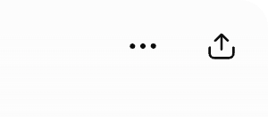

| 项 | 今天 | 提案 | 文件 |
|---|---|---|---|
| Share 字形 | 带肩方框 12×13.5px | 敞口 U 托盘 15×14.5px，描边 1.35 不变 | src/web/src/components/SessionHeaderIcons.tsx |
| ⋯ → Share 间距 | margin-left: 2px（字形间 ≈19.5px） | margin-left: 14px（字形间 ≈29.5px，同参考） | src/web/src/index.css 5083 |
| ⋯ 字形、尺寸、颜色、live 绿点 | 不变 | ||
| 待你定 | Apple 客户端仍用 SF 的 square.and.arrow.up（带肩）。只改 Web，还是 Mac/iOS 也换成同样的托盘？ | ||